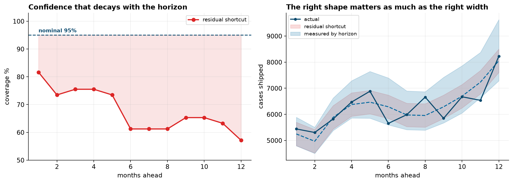

- Setting
- A specialty foods manufacturer shipping to wholesale grocery accounts. Thirteen years of monthly case volumes, and a planning team that ran a forecasting bake-off last year.
- The question
- Is 3.4 percent what this business should expect next year?
- Why it matters
- Next year's production plan, hiring plan and raw-material contracts were all sized against that number. If the forecast is less accurate than advertised, every one of them is built on a tolerance that does not exist.
- What we do
- Seal three years, re-run the bake-off on the rest, score the same thirty-two candidates from seventeen origins instead of one, measure what searching a candidate pool costs, and then check whether the prediction interval covers what it claims.
Nothing in the original bake-off was done incorrectly. The pool was sensible, the holdout was genuinely held out, and the arithmetic was right. The number it produced was still wrong by two-thirds, and this chapter is about why that can happen without anyone making a mistake.
The Claim on the Table
The export needed five repairs before anything could be measured on it. June 2019 had been pulled twice, March 2021 was recorded ten times too large, July and August 2017 were absent for an ERP migration, the month column was written two ways, and the final row covered eleven days of January rather than a month. That last one is the dangerous one: eleven days booked as a month reads as a 64 percent collapse, and it sits at the end of the file where it lands in the training window of every forecast made from the most recent data.
![Four panels. Top left: the series as exported, where a single March 2021 value near 57,000 dwarfs a business that otherwise runs between 3,300 and 8,600 cases a month, with the partial final month marked at the far right. Top right: the cleaned series from 2013 to 2025, a level that wanders upward rather than following a smooth curve, with the last three years shaded as the sealed period and the filled 2017 gap marked. Bottom left: a boxplot by calendar month showing December about a third above the average month and February about a fifth below. Bottom right: annual totals in thousands of cases, with 2018 to 2020 highlighted at plus 12, 11 and 8 percent and 2021 to 2024 muted at plus 2, 0, 1 and 1 percent.](../assets/img/capstone-backtest-firstlook.png)
The bake-off itself was ordinary. Thirty-two candidates, eight of them simple rules that need no fitting and twenty-four exponential smoothing configurations, each scored on the most recent twelve months. The lowest error won.
Read the leaderboard rather than the number. Of the eight best candidates, six assume the business does not grow at all and the other two damp their growth toward zero. Not one model near the top expects the volume to rise.
That is not a finding about the business. The twelve months the bake-off tested on grew by 0.0 percent, which is the flattest of the seventeen windows in the history, while ten of those seventeen grew faster than five percent. The bake-off asked which model best describes a year in which nothing happened, and answered correctly. The plan needs a model that describes next year.
One Holdout Is One Draw
A rolling origin is the same test repeated from many standing points. Stand at the end of December 2017, forecast the next twelve months using only what was genuinely available then, and score it. Step forward a quarter and repeat. Seventeen origins, the same thirty-two candidates, the same horizon.
| Chosen by | Winner | Its score | Where the other procedure ranks it |
|---|---|---|---|
| One holdout | ETS, no trend, additive seasonal | 3.34% | 23rd of 32 on rolling origin |
| Rolling origin | ETS, linear trend, multiplicative seasonal | 5.47% | 10th of 32 on the single holdout |
The two procedures disagree, and the disagreement is not marginal. The model the bake-off crowned is twenty-third of thirty-two once it has to perform at more than one standing point.
Fourteen different candidates win at least one origin and none wins more than twice. A bake-off run one quarter earlier or later would very likely have crowned a different model, reported a different number, and sized the production plan differently. The seasonal naive rule, which repeats last year month for month and costs nothing to run, ranked anywhere from fourth to twenty-sixth.
A leaderboard built on one origin is describing the year, not the model.
What the Searching Costs
There is a second problem underneath the first, and it survives even if the holdout year is perfectly representative. The bake-off did not measure a model, it measured the best of thirty-two. Those are different quantities, and the difference can be priced.
The experiment is to draw a random pool of a given size out of the thirty-two, pick the best of that pool on the holdout exactly as the team did, and then look at what it goes on to deliver on data nobody touched. Repeating that four thousand times per pool size gives the following.
![Two panels. Left: two lines against the number of candidates tried on a log axis from 1 to 32. The reported error falls steadily from 7.83 percent to 3.34 percent while the error delivered on fresh data drops to about 5.3 percent at two candidates and then stays flat, drifting slightly up to 5.57. The widening gap between them is shaded. Right: a bar chart of how many origins each winning candidate won, fourteen bars of which three reach two and eleven reach one, with a note that one genuinely best model would be a single bar of seventeen.](../assets/img/capstone-backtest-optimism.png)
Read the two lines against each other, because they move in opposite directions. Reported error more than halves, from 7.83 percent for a model picked without looking to 3.34 percent for the best of all thirty-two. Delivered error stops improving after the second candidate and sits between 5.3 and 5.6 percent from there on, drifting slightly worse as the search widens.
Searching harder made the report better and the forecast no better. The wedge between the lines is what the procedure overstates its own accuracy by, and it is a function of how many things were tried: 2.24 percentage points on a claim of 3.34. Thirty-two is a modest search. Automated forecasting tools routinely evaluate several hundred configurations, and this effect grows with that count.
Opening the Sealed Period
Three years, January 2023 to December 2025, were held back before any of this began and used to choose nothing. Opening them once, after every decision has been made, is the only way to find out what the choosing cost.
| Chosen by | Claimed | Delivered | |
|---|---|---|---|
| One holdout, best of thirty-two | 3.34% | 5.57% | two-thirds worse than promised |
| Rolling origin, best of thirty-two | 5.47% | 4.62% | better than promised |
| Best possible with hindsight | not claimed | 4.62% | the same model |
| Seasonal naive, fitted to nothing | not claimed | 6.76% | the floor to beat |
The honest procedure claimed a worse number and produced a better forecast. That is the trade this chapter is arguing for, and it is worth being precise about which part of it is repeatable. That rolling-origin selection landed on exactly the model hindsight would have picked is luck. That its claim was conservative while the one-origin claim was optimistic is not.

The year-by-year figures show the mechanism rather than the outcome. In 2023 and 2024, which grew 0.7 and 0.6 percent, the two models are within a quarter of a point of each other. In 2025, which grew 7.9 percent, the bake-off's pick posted 6.93 percent against the other's 4.53. It was never a worse model in general. It was a model selected on evidence that contained no growth, and it failed on the first year that had some.
Neither model reached 3.4 percent in any of the three years. The claim was not merely optimistic on average. It was never met.
The Interval Nobody Checked
A point forecast alone is not a plan. Somewhere downstream a planner needs a range, and the usual shortcut is the forecast plus or minus 1.96 times the standard deviation of the model's residuals. It is one line of code and it is almost never checked.
An interval meant to miss one month in twenty misses one month in three. Two separate faults are stacked here, and they need separating.
It is too narrow everywhere. Even one month ahead, coverage is 82 percent rather than 95. Residuals are what is left after the model has already adapted to those months. They measure how well it fits, not how well it forecasts, and using one as a proxy for the other understates by construction.
It is the same width at twelve months as at one. Uncertainty about next December compounds every month of drift between here and there. The interval does not widen by a single case, so coverage falls away with the horizon.
An Interval Measured Instead of Assumed
The backtest has already produced the thing the interval needed. Forty-nine origins each generated a one-month-ahead error, a two-month-ahead error, and so on out to twelve. Taking the 2.5th and 97.5th percentiles of those errors at each horizon separately gives a band built from what the model has done rather than from an assumption about what it should do.
| On the sealed period | Coverage | Width at one month | Width at twelve months |
|---|---|---|---|
| Residual shortcut | 83% | 897 cases | 897 cases |
| Measured by horizon | 94% | 1,096 cases | 2,346 cases |
It covers 94 percent against a nominal 95, and it is wider than the shortcut at every horizon but not by a constant amount. At one month it is a modest correction. At twelve it is 2.6 times wider. The shortcut was not simply too small by some factor that could be patched with a multiplier. It was the wrong shape: mildly over-confident about next month and badly over-confident about next December.
What goes to the planning team is therefore a range and not a point. Next December is 7,285 to 9,631 cases. A raw-material contract written against the midpoint is a contract written against a number nobody should have believed.
What This Does Not Settle
Three sealed years is three draws. The direction of every result here is well supported by the seventeen development origins, but the size of the gap on the sealed period is itself measured with error, and a fourth year could move it.
Two of the 156 months were invented. July and August 2017 were interpolated across the ERP gap, and every backtest trains through them. It is a small debt and it is real.
The tie at the end is luck. Rolling-origin selection happened to land on the model that hindsight says was best of the thirty-two. Nothing in the method guarantees that, and reporting it as though the procedure finds optima would be exactly the overclaiming this chapter is about.
One series, one metric. MAPE penalizes over-forecasting and under-forecasting differently, and it is undefined on zeros, which is why the previous chapter could not use it at all. A business that would rather carry stock than miss an order should be selecting on a loss function that says so, and the rankings could reorder under one.
Nothing here fixes a model that is wrong about the world. Honest evaluation measures a candidate pool. If every candidate in the pool misses a driver the business already knows about, backtesting will faithfully report which of them misses it least.
What to Watch
- ✓Ask what the test period looked like. Before reading any accuracy figure, find out what happened in the window it was measured on. A flat year selects flat models and a fast year selects fast ones, and neither tells you about next year.
- ✓Count what was tried. The overstatement grows with the number of candidates, so a reported error means nothing without the size of the search that produced it. Automated model selection makes this larger, not smaller.
- ✓Use many origins, and look at the spread as well as the average. If the winner's rank swings from first to twenty-second across origins, the ranking is not a stable fact and should not be reported as one.
- ✓Seal something and keep it sealed. Data used to choose a model is spent and cannot also measure it. One look, at the end, after every decision.
- ✓Keep a free baseline in the comparison forever. Seasonal naive delivered 6.76 percent here without being fitted to anything. The day a maintained model stops beating it is the day it has quietly broken.
- ✓Measure coverage, never assume it. An interval is a claim about frequency, and it is cheap to check. Check it separately at each horizon, because the failure usually grows with distance.
Backtesting in Data Science & AI
Nothing in this chapter is specific to forecasting. Any procedure that reports the best score out of many attempts, and does not pay for the search, reports a number that is too good. The forecasting case is only the one where the leakage is easiest to see, because time gives an unarguable ordering.
| Where the same thing happens | The many attempts are | What the honest version costs |
|---|---|---|
| Hyperparameter search | Every configuration in the grid | A nested split, so the tuning does not score itself |
| Feature selection | Every subset considered | Selection repeated inside each fold, not before them |
| Leaderboards and benchmarks | Every submission against a public test set | A held-back private set, opened once |
| Quantitative trading | Every strategy variant backtested | Out-of-sample periods and deflated performance measures |
| Prompt and model iteration | Every prompt tried against an eval set | A fresh eval the prompts were not written against |
Rolling-origin evaluation was set out by Tashman in 2000 as the standard for forecast accuracy, and the M-competitions run by Makridakis since 1979 have repeatedly found that simple methods are harder to beat than the field expects, and that combinations beat individual models. Hyndman and Koehler introduced the scaled error in 2006, partly because percentage errors break down in exactly the way the previous chapter showed. The selection-bias problem has a large literature of its own, from White's reality check in 2000 through the Hansen superior predictive ability test and the deflated Sharpe ratios used to discount backtested trading strategies, all of them answering the same question: how good does the best of many attempts have to look before it is more than luck.
Part XXXII in four chapters
- The Forecasting Workflow set out why a time series breaks the usual validation rules: never shuffle, respect the origin, and forecast at the horizon the decision actually needs.
- Hierarchical Forecasting: Store, Region, National took forecasts that have to add up and found that reconciliation is insurance rather than an improvement.
- Intermittent Demand: Spare Parts met a series that is zero most weeks, where the reported error could not be computed and the metric's optimum was a warehouse that never orders.
- This chapter asked what any of those accuracy figures are worth, and found that the number depends on how many models were tried and which year they were tried on.
The full project, step by step
The companion notebook repairs five faults in the export, builds the thirty-two candidates, runs the bake-off exactly as the team ran it, re-scores every candidate from seventeen rolling origins, measures how much the reported error is inflated by the size of the search, opens the sealed period once, and then tests whether the prediction interval covers what it promises at every horizon.
The dataset
(capstone-forecast-backtesting.xlsx) holds thirteen years of monthly case volumes as the
extract arrived, with the duplicated month, the decimal slip, the missing summer, the two date formats
and the partial final row all still in place. Two written reports accompany it: a
plain-language brief for the planning director, and a technical report
covering the evaluation design, the selection-bias experiment and the coverage tests.
🎓 Key Takeaways
- ✓The bake-off promised 3.34 percent and delivered 5.57 on three sealed years, an error two-thirds larger than the figure the production plan was sized against.
- ✓It tested on the flattest year in the history, which grew 0.0 percent, and every model near the top of its leaderboard assumes no growth. The pick then failed on the first sealed year that grew.
- ✓Fourteen of thirty-two candidates win at least one of seventeen origins and none wins more than twice, so a one-origin leaderboard is reporting the year rather than the model.
- ✓Overstatement grows with the size of the search: reported error more than halves from 7.83 to 3.34 percent as the pool widens while delivered error stays near 5.4, a gap of 2.24 points at thirty-two candidates.
- ✓Rolling-origin selection claimed 5.47 and delivered 4.62, conservative rather than optimistic, and beat the free seasonal naive baseline by about two points.
- ✓A nominal 95 percent interval covered 67.9 percent, falling from 82 percent at one month to 57 at twelve. Rebuilt from backtest errors at each horizon it covered 94 percent, and needed to be 2.6 times wider at twelve months.